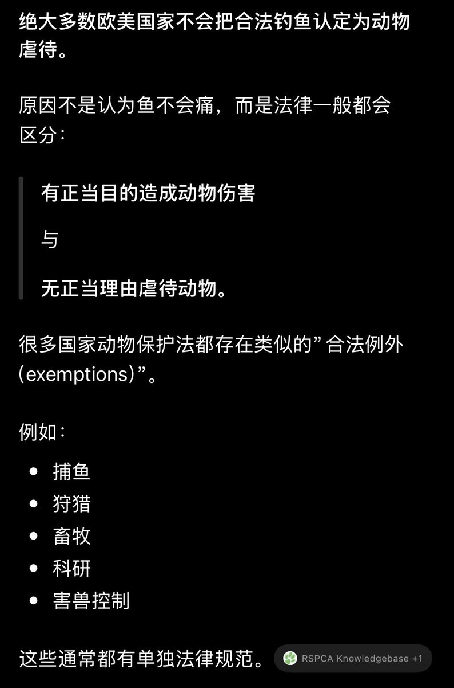

好好笑的论述……你非要这样的话，那我很难不怀疑你是为了反驳而反驳。
来让我们梳理一下你的逻辑，同样是为「娱乐」而伤害，对狗我就抗议，对鱼我就沉默。所以你认为我双标，认为我不想要真正的动物保护法。
行啊，让我们看看真正的动物保护法是如何看待钓鱼的？（如图所示）我追求的是动物保护法，当然按成熟的现有法律来做，钓鱼不被视为虐待，那我就没有资格管别人钓鱼。所以我只能把圣母心限制在自己身上。
为什么对鱼和对狗的伤害我要“双标”？
你觉得钓鱼佬的乐趣来源于观赏鱼被勾住嘴巴拼命挣扎的样子吗？钓友会为了看鱼痛苦的样子故意刀劈火烤吗？钓鱼的快乐来源于“钓上鱼”这件事，钓鱼者的目的不是让鱼痛苦。而浇汽油把狗活活烧死，那几个畜生的快乐来源于什么？来源于狗的痛苦、狗的惨叫，来源于狗被烧焦的尸体。你居然能把这两个行为放到一起讨论，我是真的想不到。
来让我们梳理一下你的逻辑，同样是为「娱乐」而伤害，对狗我就抗议，对鱼我就沉默。所以你认为我双标，认为我不想要真正的动物保护法。
行啊，让我们看看真正的动物保护法是如何看待钓鱼的？（如图所示）我追求的是动物保护法，当然按成熟的现有法律来做，钓鱼不被视为虐待，那我就没有资格管别人钓鱼。所以我只能把圣母心限制在自己身上。
为什么对鱼和对狗的伤害我要“双标”？
你觉得钓鱼佬的乐趣来源于观赏鱼被勾住嘴巴拼命挣扎的样子吗？钓友会为了看鱼痛苦的样子故意刀劈火烤吗？钓鱼的快乐来源于“钓上鱼”这件事，钓鱼者的目的不是让鱼痛苦。而浇汽油把狗活活烧死，那几个畜生的快乐来源于什么？来源于狗的痛苦、狗的惨叫，来源于狗被烧焦的尸体。你居然能把这两个行为放到一起讨论，我是真的想不到。
